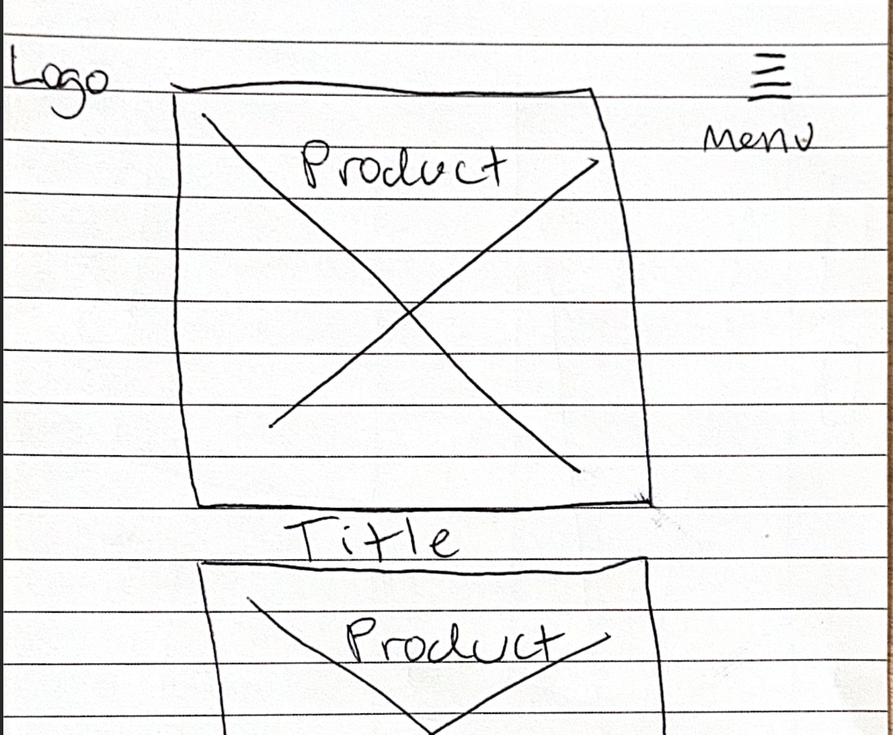
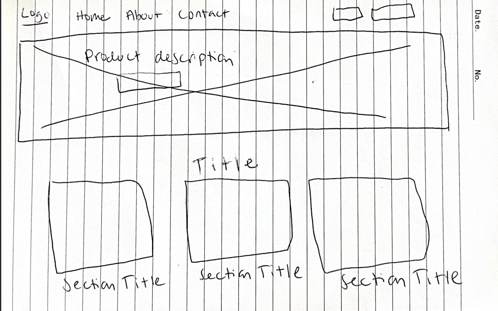

Name: Brew & Bean
This name reflects a cozy, local café focused on brewing quality coffee and providing a warm, welcoming space for the community. It's short, memorable, and evokes a comfortable, artisan coffee experience.
Optional Domain: brewandbeancafe.com (availability not required for this course)
The website is an informational and promotional hub for the Brew & Bean café. It will showcase the menu, share the story of the café, display featured drinks and the ambiance through a photo gallery, and provide essential contact information including hours, location, and social links. JavaScript features like a menu filter, rotating specials, and a feedback pop-up will make it dynamic and user-friendly.
Primary Colors:
Mobile View:
Desktop View:
The wireframes represent the layout structure of the homepage for both mobile and desktop views, showing the placement of branding, nav, welcome message, featured menu item, and footer.